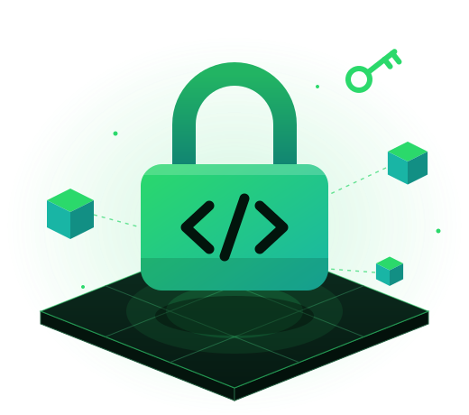

Caçador de segredos
Encontra chaves, tokens e senhas no código e em todo o histórico de commits.
O SpyCode varre seu repositório do GitHub atrás de chaves expostas, rotas abertas e bibliotecas vulneráveis, e explica cada achado em português.
Escanear repositório Como funciona
Encontra chaves, tokens e senhas no código e em todo o histórico de commits.
Mostra todas as rotas da sua API e marca as que estão abertas sem autenticação.
Cruza suas bibliotecas com a base pública de falhas e mostra a versão que corrige.
$ spycode scan grupo-pi/app-de-tarefas lendo 128 arquivos ✓ 6 rotas mapeadas ✗ chave exposta em .env, linha 3 ✗ DELETE /users/:id sem autenticação ! lodash 4.17.15 com falha conhecida ✓ código apagado da pasta temporária nota final: 58/100
3 motores de análise
Bem-vindo ao SpyCode
Quase metade do código gerado por IA chega com alguma falha. O SpyCode lê o que você publicou e aponta o que precisa de atenção antes de virar problema.
Avisamos quando um segredo vazou, inclusive nos commits antigos.
Mostramos qual rota qualquer pessoa consegue acessar sem login.
Mostramos qual biblioteca tem falha conhecida e a versão que corrige.